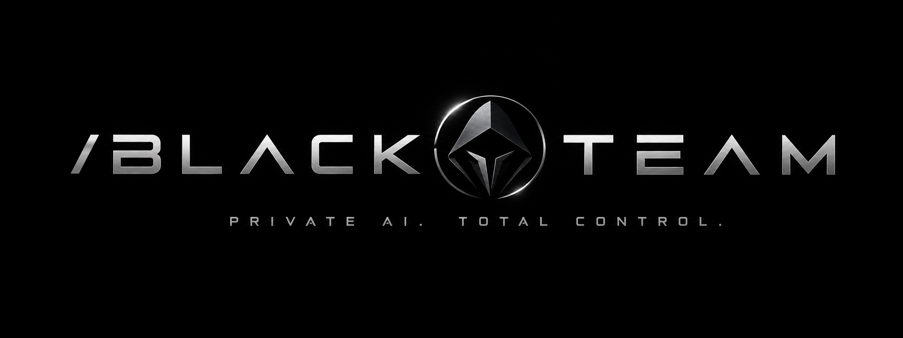
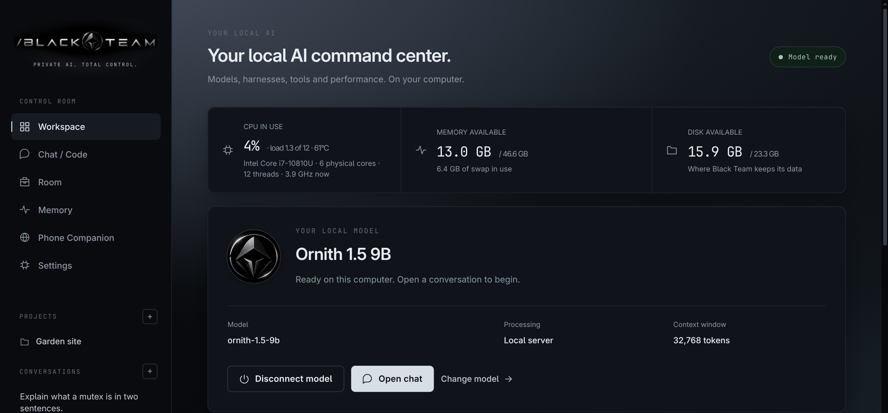
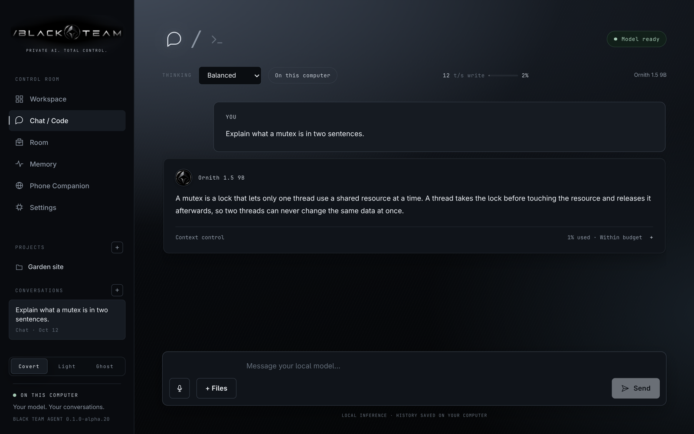
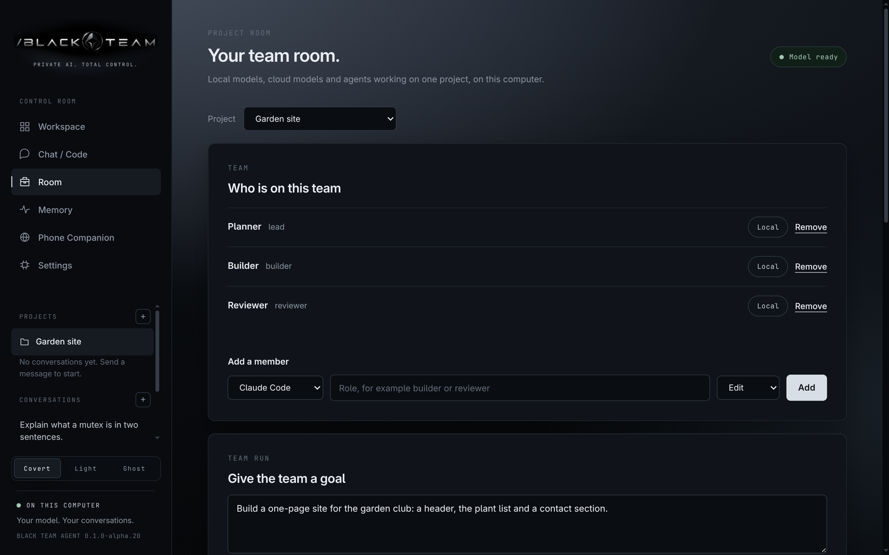
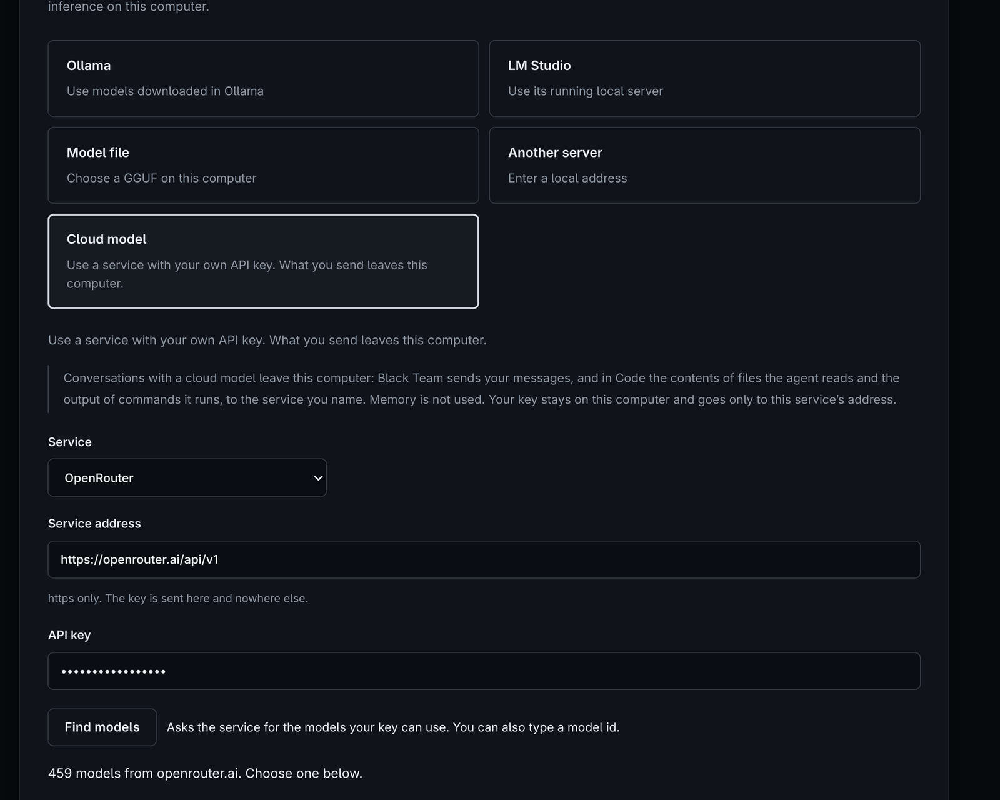
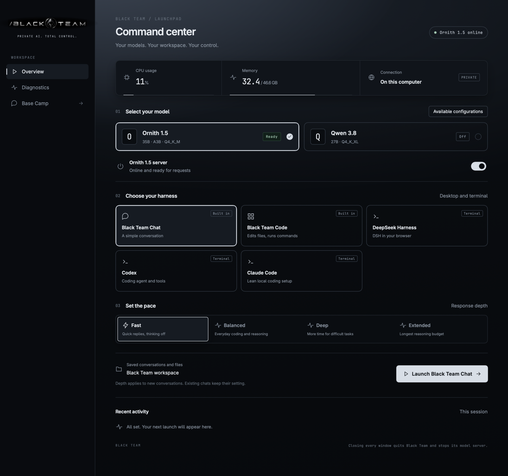

Your own models
Load a compatible GGUF through llama.cpp, or connect to a local OpenAI-compatible server such as Ollama or LM Studio. Keep several models in one list and switch between them.

Private AI. Total control.
Black Team Agent is a local-first AI agent harness for Linux and Mac. Run models on your own computer, optionally add a cloud model with your own key, and let agents work on your files and commands under your approval.
Alpha software: expect rough edges, and read the verification and known limits before relying on it.
72 seconds, no sound. Every run on screen is real: a model download, a chat, a coding task, and a team of agents finishing a job together. Sped-up parts say so on screen.
Also on YouTube, on the Black Team Agent channel. The player above loads the video from this site, not from YouTube.
Load a compatible GGUF through llama.cpp, or connect to a local OpenAI-compatible server such as Ollama or LM Studio. Keep several models in one list and switch between them.
Chat for conversations. Code reads, searches and edits files and runs commands in your chosen folder. It measures your model's speed and sizes its work to match.
File edits appear as diffs in the conversation and can be undone. Commands that delete, install or reach the network wait for your approval.
Use Claude Code or Codex under your own subscription from Code. Choose how much they may do on their own: Ask, Edit or Auto, and roll back a task's changes.
A room per project, with members and roles. Give the team a goal: the lead plans, members work in turn, and the lead writes a report.
A small vault of linked notes that only your local models use. It is not used in cloud conversations or in teams with a cloud member.
Pair a phone over your own Tailscale network and use the same workspace from a browser on iPhone or Android. Your computer does the work.
black-team starts a session in a terminal, or asks one question with black-team -p. It uses the same models, conversations, projects and memory as the app.
With a local model, prompts and inference stay on your computer. These are the rules, in short. The privacy page has more, and the full rules are in docs/PRIVACY.md.
Black Team Agent does not bundle models, llama.cpp, Hermes or other harnesses. You connect those yourself, from Settings. Each release also has a .sha256 file to check your download.
black-team-0.1.0-alpha.26-linux-x64.tar.gz and its .sha256 file into one folder. Open the releases page if the links do not work.sha256sum -c black-team-0.1.0-alpha.26-linux-x64.tar.gz.sha256tar -xzf black-team-0.1.0-alpha.26-linux-x64.tar.gz./install.sh. No administrator access is needed. Open Black Team from your applications menu, or run ~/.local/bin/black-team-desktop.Updating: quit the app, extract the newer archive and run its ./install.sh. Your data stays in place. black-team-desktop --rollback returns to the previous release. On Ubuntu 24.04 and later the window may need a one-time sandbox step; see the installation notes.
The installer also links the black-team terminal command next to black-team-desktop when that name is free. The Mac app includes it, as shown in the macOS steps.
Black-Team-0.1.0-alpha.26-mac-arm64.zip and its .sha256 file. Open the releases page if the links do not work.shasum -a 256 -c Black-Team-0.1.0-alpha.26-mac-arm64.zip.sha256/Applications/Black\ Team.app/Contents/MacOS/black-team install-commandOn first start, Workspace lists the local model servers and model files it finds on your computer. Choose one, then choose Save and open chat. Ollama and LM Studio are found at their usual local addresses. The model setup guide explains the rest.





Screens from 0.1.0-alpha.20 with sample data. Select one to see it full size.